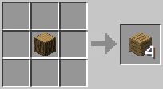
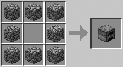
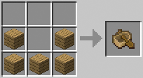

Guía de Crafteos en Minecraft

Crafteo de madera
La madera tiene muchos usos, construcción, creación de objetos, etc.

Crafteo de horno
El horno sirve para fundir nuestros minerales en bruto.

Crafteo de barco
El barco sirve para poder desplazarse más rápido por el océano.

Crafteo de TNT
La TNT sirve para explotar cosas.

Crafteo de Antorcha
La antorcha sirve para iluminar lugares oscuros y evitar que aparezcan animales hostiles.

Crafteo de Piedra Luminosa
La piedra luminosa es un objeto decorativo en Minecraft.